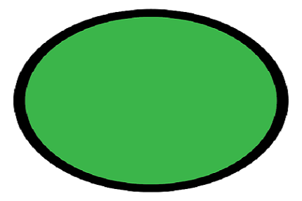
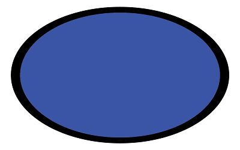

Obat-obatan yang beredar memiliki logo yang bertujuan untuk keamanan, ketentuan
penggunaan, dan serta pengamanan pengedaran. Oleh karenanya, beberapa macam logo bulat
dengan warna dan gambar tertentu ini harus dikenali sebelum menggunakan atau mengonsumsi
obat.itaque quo nostrum! Dolores laborum
cum aspernatur animi, temporibus quaerat laudantium.
Obat yang memiliki logo artinya sudah memiliki izin edar dari Badan POM dan diakui
keamanannya, meskipun penggunaannya harus tetap melihat indikasi sesuai warna atau
bentuk logonya.
Obat dengan kemasan bertanda lingkaran berwarna hijau dengan garis tepi berwarna hitam
menandakan obat bebas. Anda bisa mendapatkannya tanpa resep dokter. Contoh obat bebas
adalah paracetamol dan multivitamin.
Kemasan dengan logo ini sudah pasti dilengkapi dengan cara penggunaan dan
penyimpanannya, sehingga penggunanya merasa aman.


Obat dengan kemasan yang memiliki tanda lingkaran berwarna biru dan garis tepi berwarna
hitam ini sebenarnya termasuk ke dalam obat keras, namun dapat Anda peroleh tanpa resep
dokter.
Penggunaan obat dengan simbol ini harus cermat, sesuai aturan dalam kemasan, dan lebih
baik jika dengan resep dokter. Inilah alasan mengapa bernama obat bebas terbatas. Contoh
obat yang termasuk ke dalam logo obat bebas terbatas ini adalah chlorpheniramine (CTM),
theopiline, tremenza, dan lactobion.
Selain memiliki tanda khusus lingkaran biru, terdapat juga tanda peringatan aturan pakai
obat. Ini karena hanya dengan takaran dan kemasan tertentu, penggunaannya aman untuk
pengobatan sendiri. Tanda peringatan berupa empat persegi panjang di dalamnya terdapat
huruf putih pada dasar hitam yang terdiri 6 macam, yaitu: